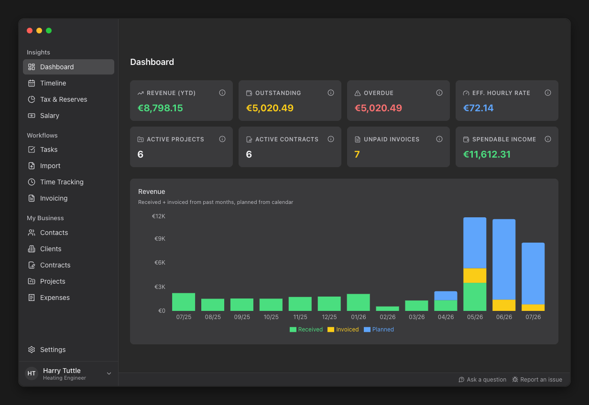
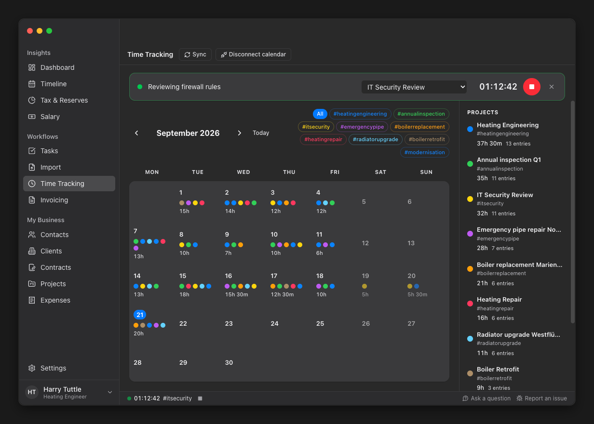
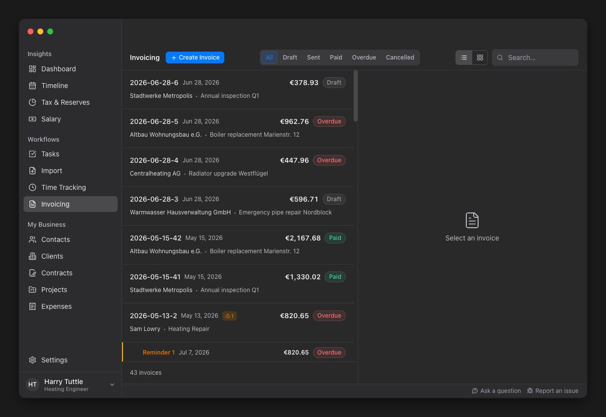
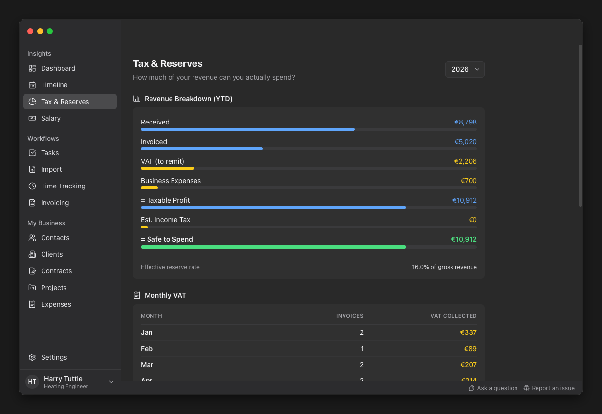
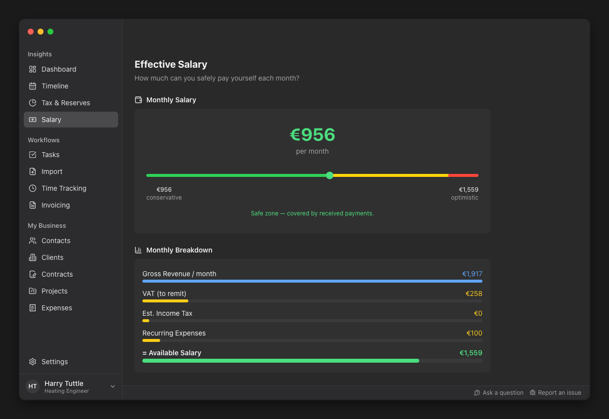
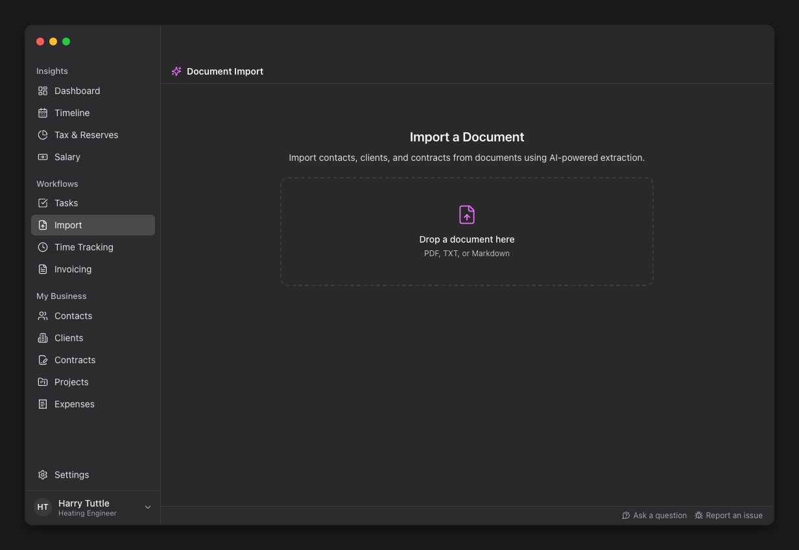

Freelance paperwork, handled.
Tuttle turns your calendar into tracked time, tracked time into invoices, and your invoices into a clear picture of your business — including how much of the money that came in is actually yours to spend.

- Local by default
- Your data stays on your device. No account, no cloud, no tracking.
- E-invoicing ready
- Invoices that meet the new EU e-invoicing rules, out of the box.
- One tool, not five
- Time tracking, invoicing, tax reserves and forecasting in one app.
- Open source
- GPLv3, built in the open, free to use and to fork.
What it does
From calendar entry to paid invoice
Every part of the job in one app. Each one is useful on its own, and together they add up to a business you can see.
Time tracking without the stopwatch
You already write your work down somewhere. Tuttle picks it up from there instead of asking you to type it a second time.
- Bring in the appointments from your calendar
- Or import from the time tracker you already use
- Sort the hours by client and project

Invoices and timesheets, generated
Turn your tracked hours into an invoice with a matching timesheet, or just enter the hours and days yourself. Fixed-price work is invoiced the same way.
- Invoice and timesheet together, ready to send
- Send by email or save as a PDF
- Every invoice meets the new EU e-invoicing rules

Tax and VAT set aside before you spend it
The money in your account is not the money you earned. Tuttle keeps the difference in plain sight.
- See what to set aside for VAT and income tax
- Follow your revenue down to the part you can actually spend

An actual salary, calculated
See what you can safely pay yourself each month, based on paid and outstanding invoices, tax reserves and recurring expenses.

Drop a PDF, keep the data
Hand Tuttle an invoice or a contract you already have and it reads the details for you, then files them under the right client, contract and project.

Privacy
Your business data is none of our business
Tuttle is a desktop application, not a service you log into. There is nothing to sign up for and nothing to cancel.
Stored on your device
Clients, contracts, time and invoices live in a local database on your own machine.
No central collection
Your financial data is processed locally. We do not run a server that sees it.
Auditable
The whole application is open source under GPLv3. Read it, build it, change it.
Download Tuttle
Pick your platform, install it like any other desktop app, and start. No account, no setup wizard, no trial period.